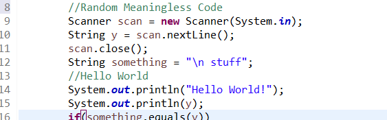

Saying that our lives revolve around technology is a massive understatement to me. Technology and specifically software are seemingly intertwined in nearly every aspect of our daily lives. Many products across a multitude of industries are implementing software in an effort to become “smarter,” adding more bells and whistles in an attempt to make life more convenient. As the world continues to move in this “smarter” direction, understanding the software behind these technologies has become a highly desirable skill. It is such a desirable skill that many parents even have their young children learn to code. Learning about software engineering can lead to countless opportunities in many different fields, or even lead to the creation of new fields that do not yet exist.
My interest in software engineering started when I first began playing video games back in middle school. I would always want to remake or add features to these games that I thought would make it more enjoyable for me. Of course, doing so would require me to learn about the software used to build these games. Unfortunately, my middle school self could not keep up with all the functions and syntax of programming languages at the time, leading me to eventually give up. After several years of time away from coding, I decided to try again in my senior year of high school by taking a computer science class. I started to understand the language that had bested me several years before, and I began to think that I could finally comprehend the world of code. I have been taking coding classes continuously since then, and I have learned more about software engineering than I ever thought I would.
In terms of the future, there is still much that I can learn in the field of software engineering. As someone who enjoys drawing and designing, I would like to learn more about website design and development. Being able to develop websites that look the way I want them to is something I would like to be capable of. Another field I would like to learn more about is software for data analytics. Many firms collect large quantities of data from devices that they use in their everyday business activities. Learning how to process this data can help businesses improve their products and services. Additionally, the software engineering skills that I currently possess will need to be refined and improved on as new technologies and techniques are developed, meaning that there will always be much for me to learn.
As technology continues to advance, it will only become more important for people to learn about the technology that they use on a daily basis. Software engineering has become the key to running the modern technological world that we live in today.